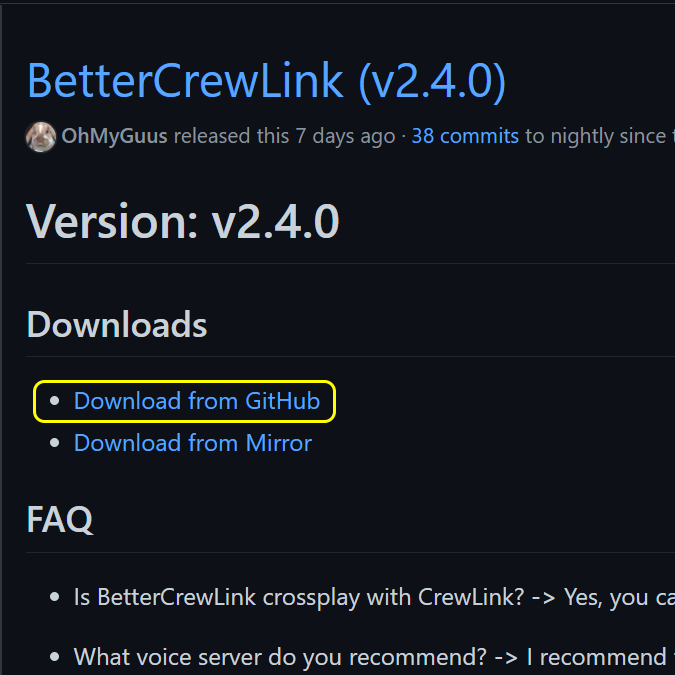
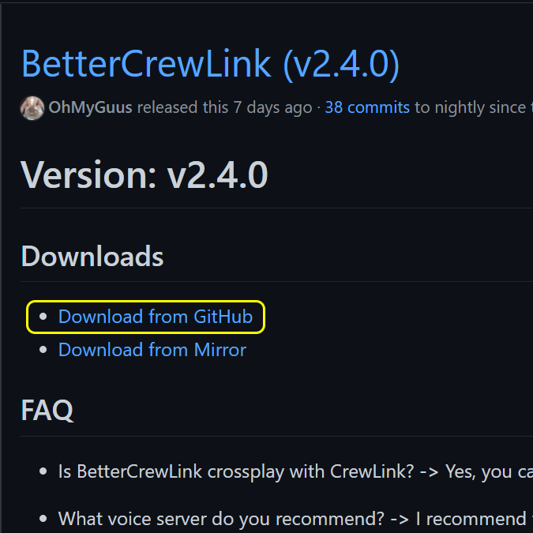
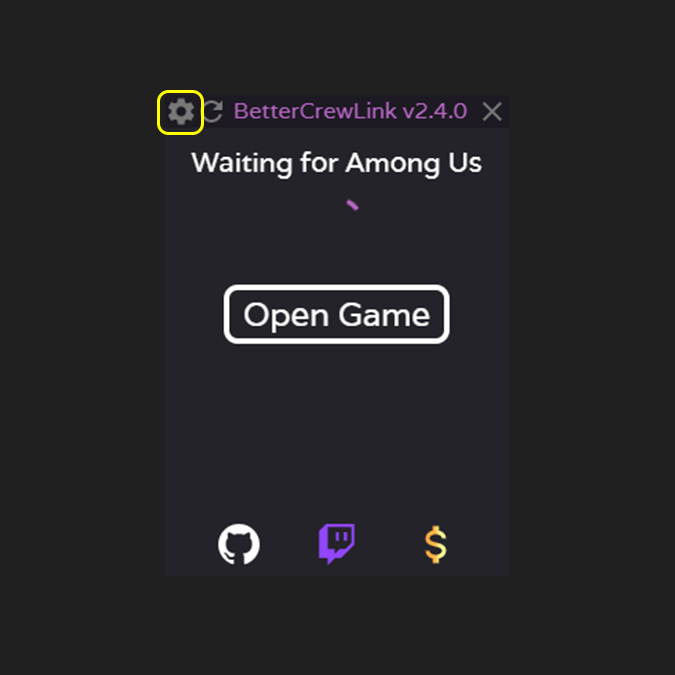
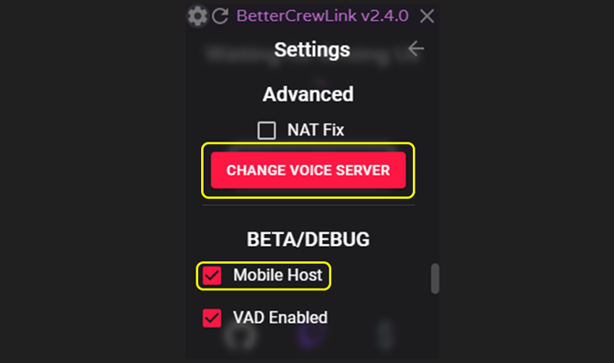

Step One
Visit OhMyGuus' GitHub page to download the BetterCrewlink installer. Click Download on Github.
Visit OhMyGuus' GitHub page to download the BetterCrewlink installer. Click Download on Github.
Install and launch BetterCrewlink. Click on settings.
Select 'Change Voice Server' and replace the default server with our custom server URL
Additionally, if you are hosting the game you must ensure 'Mobile Host' is checked under BETA/DEBUG
Now toggle your preferred game settings and proceed to breaking friendships 😊 You may have to press ctrl + r on BetterCrewLink if you have voice issues